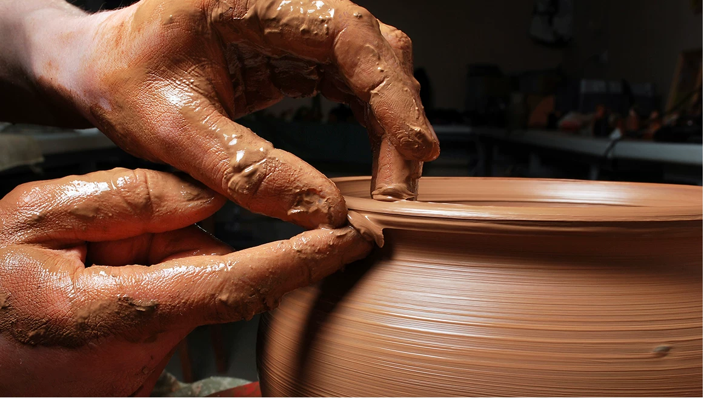

Pottery is the and the products of forming vessels and other objects with and other raw materials, which are fired at high to give them a hard and durable form. The place where such wares are made by a potter is also called a . Pottery is made by forming a clay body into of a desired shape and heating them to high temperatures (600–1600 °C).